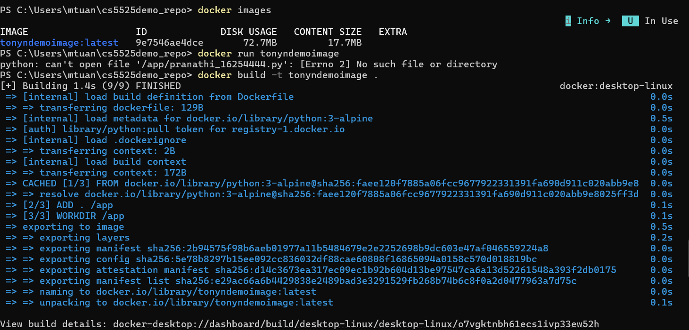
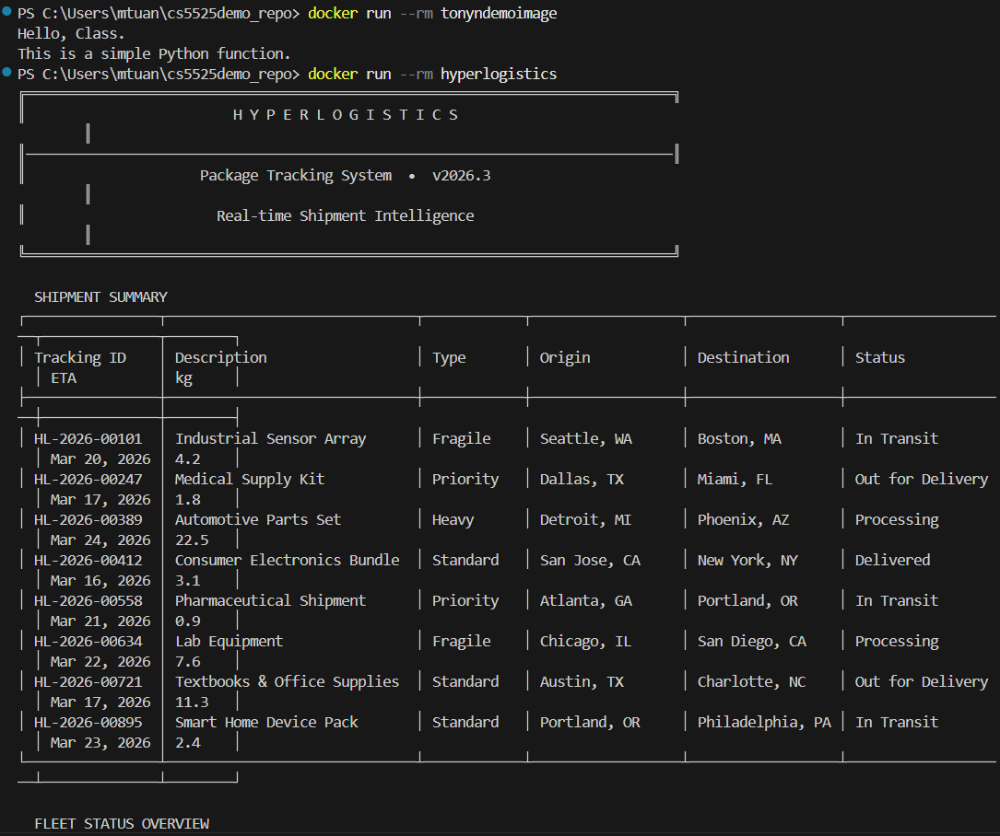
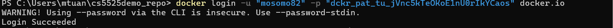
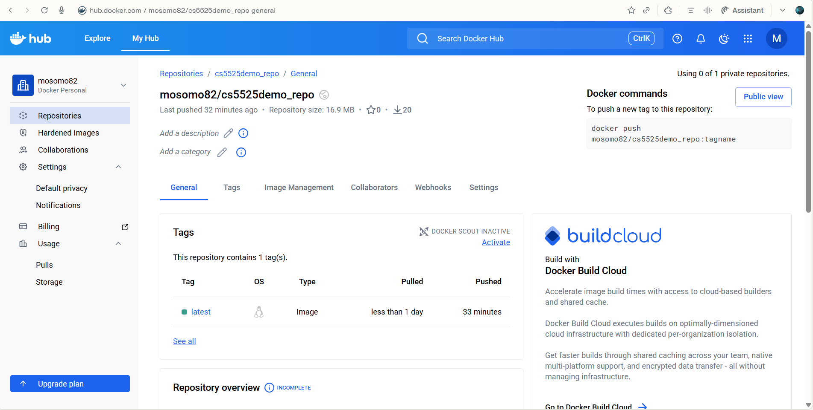
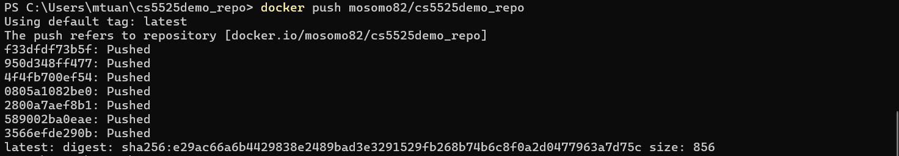
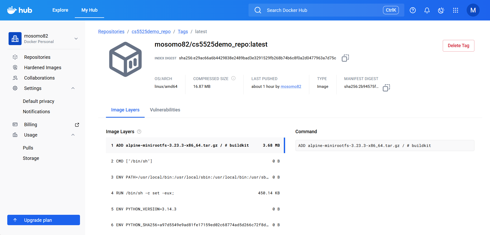

| Course | CS5525 - Cloud Computing |
| Student | Tony Nguyen |
| Date | March 20, 2026 |
| University | University of Missouri - Kansas City |
| Docker Hub | mosomo82 |
python:3-alpine Docker container.
docker build -t tonyndemoimage .
The image name tonyndemoimage embeds the student name (Tony N).
docker images listing:
docker run --rm tonyndemoimage

docker login

docker tag tonyndemoimage mosomo82/cs5525demo_repo
docker images showing tagged repository mosomo82/cs5525demo_repo:
docker push mosomo82/cs5525demo_repo

URL: https://hub.docker.com/repository/docker/mosomo82/cs5525demo_repo
Confirms: account name mosomo82, repository public, tag latest.

docker build -t tonyndemoimage .
2.docker run --rm tonyndemoimage
3.docker login
4.docker tag tonyndemoimage mosomo82/cs5525demo_repo
5.docker push mosomo82/cs5525demo_repo
| Property | Value |
|---|---|
| Base image | python:3-alpine — no additional packages installed |
| Dependencies | Python stdlib only: datetime, sys, os |
| Non-interactive safe | sys.stdin.isatty() gates interactive prompt — container exits cleanly |
| Reproducible output | 8 hardcoded package records (no random) — identical on every run |
| Packages tracked | 8 shipments across 4 statuses: Processing, In Transit, Out for Delivery, Delivered |